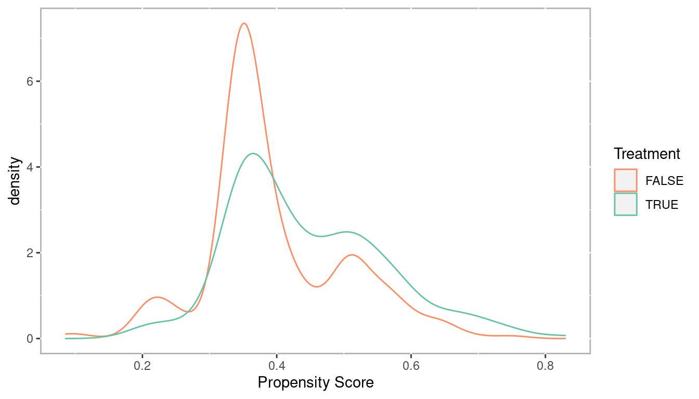
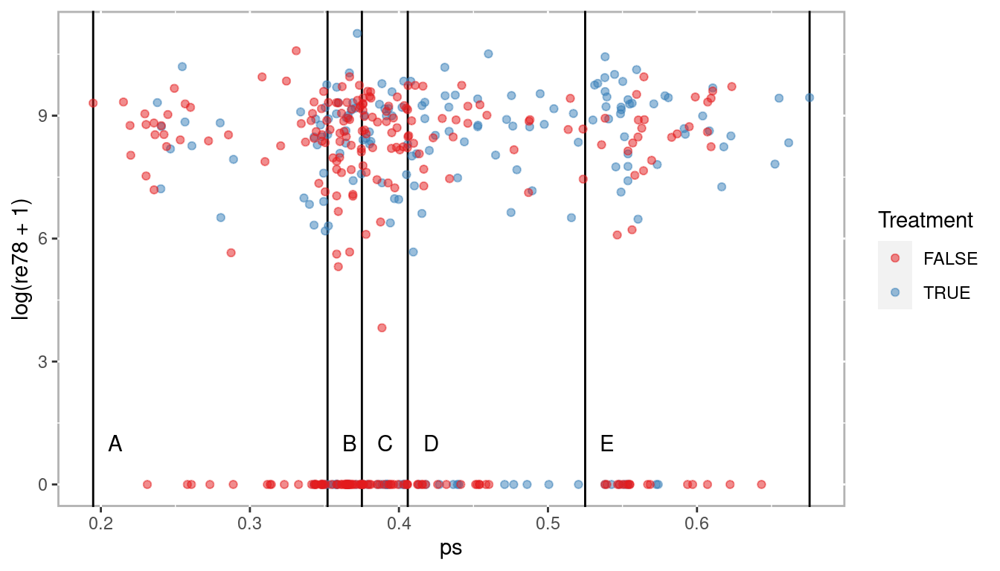
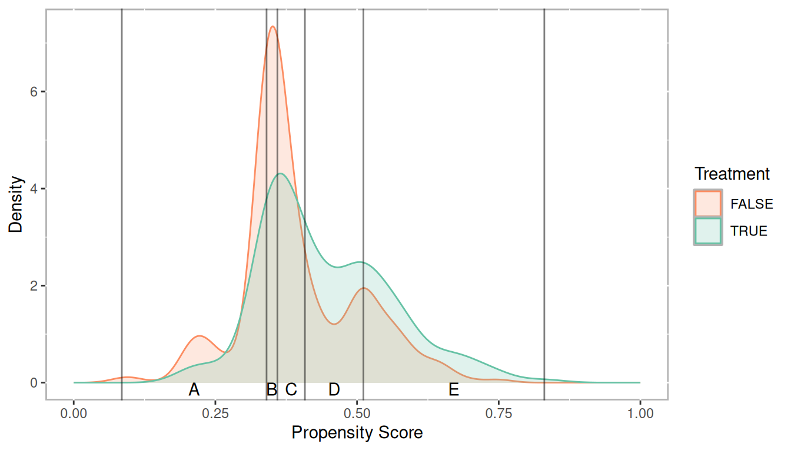
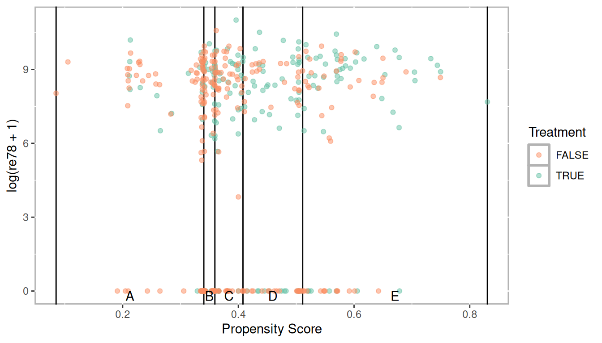
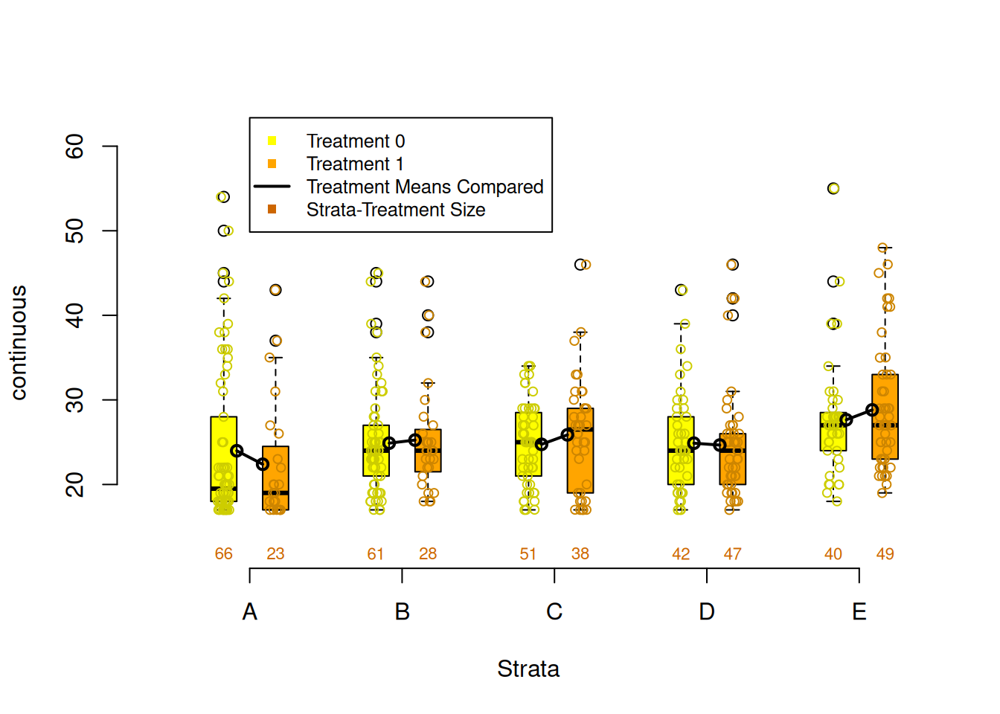

2 Stratification
The tutoring example has treatment with three levels: Treat1, Treat2, and Control. We’ll convert this to a two level treatment for this example.
data(lalonde, package = 'Matching')2.1 Estimating Propensity Scores
lalonde.formu <- treat ~ age + educ + black + hisp + married + nodegr + re74 + re75
lalonde.glm <- glm(lalonde.formu,
family = binomial(link = 'logit'),
data = lalonde)
summary(lalonde.glm)##
## Call:
## glm(formula = lalonde.formu, family = binomial(link = "logit"),
## data = lalonde)
##
## Deviance Residuals:
## Min 1Q Median 3Q Max
## -1.4358 -0.9904 -0.9071 1.2825 1.6946
##
## Coefficients:
## Estimate Std. Error z value Pr(>|z|)
## (Intercept) 1.178e+00 1.056e+00 1.115 0.26474
## age 4.698e-03 1.433e-02 0.328 0.74297
## educ -7.124e-02 7.173e-02 -0.993 0.32061
## black -2.247e-01 3.655e-01 -0.615 0.53874
## hisp -8.528e-01 5.066e-01 -1.683 0.09228 .
## married 1.636e-01 2.769e-01 0.591 0.55463
## nodegr -9.035e-01 3.135e-01 -2.882 0.00395 **
## re74 -3.161e-05 2.584e-05 -1.223 0.22122
## re75 6.161e-05 4.358e-05 1.414 0.15744
## ---
## Signif. codes: 0 '***' 0.001 '**' 0.01 '*' 0.05 '.' 0.1 ' ' 1
##
## (Dispersion parameter for binomial family taken to be 1)
##
## Null deviance: 604.20 on 444 degrees of freedom
## Residual deviance: 587.22 on 436 degrees of freedom
## AIC: 605.22
##
## Number of Fisher Scoring iterations: 4
lalonde$ps <- fitted(lalonde.glm)Check the distributions of propensity scores to ensure we have good overlap
ggplot(lalonde, aes(x = ps, color = as.logical(treat))) +
geom_density() +
scale_color_brewer('Treatment', type = 'qual', palette = 6)
2.2 Stratifying
Stratification using quintiles.
breaks <- quantile(lalonde$ps, seq(0, 1, 1/5))
lalonde$strata <- cut(x = lalonde$ps,
breaks = breaks,
include.lowest = TRUE,
labels = letters[1:(length(breaks) - 1)])
table(lalonde$strata, useNA = 'ifany')##
## a b c d e
## 89 89 89 89 89
table(lalonde$treat, lalonde$strata, useNA = 'ifany')##
## a b c d e
## 0 62 59 56 42 41
## 1 27 30 33 47 48
2.3 Checking Balance
covars <- all.vars(lalonde.formu)
covars <- lalonde[,covars[2:length(covars)]]
PSAgraphics::cv.bal.psa(covariates = covars,
treatment = lalonde$treat,
propensity = lalonde$ps,
strata = lalonde$strata)
PSAgraphics::box.psa(continuous = lalonde$age,
treatment = lalonde$treat,
strata = lalonde$strata,
xlab = "Strata",
balance = FALSE)
PSAgraphics::cat.psa(categorical = lalonde$nodegr,
treatment = lalonde$treat,
strata = lalonde$strata,
xlab = 'Strata',
balance = FALSE)
2.4 Estimate Effects
psa::loess.plot(x = lalonde$ps,
response = log(lalonde$re78 + 1),
treatment = lalonde$treat == 1)
PSAgraphics::circ.psa(response = log(lalonde$re78 + 1),
treatment = lalonde$treat == 1,
strata = lalonde$strata,
revc = TRUE)
## $summary.strata
## n.FALSE n.TRUE means.FALSE means.TRUE
## a 62 27 5.716641 7.254306
## b 59 30 5.049745 5.283601
## c 56 33 5.737915 5.415335
## d 42 47 5.761898 6.525840
## e 41 48 5.211647 7.583088
##
## $wtd.Mn.TRUE
## [1] 6.412434
##
## $wtd.Mn.FALSE
## [1] 5.495569
##
## $ATE
## [1] -0.9168647
##
## $se.wtd
## [1] 0.3879182
##
## $approx.t
## [1] -2.363551
##
## $df
## [1] 435
##
## $CI.95
## [1] -1.6792917 -0.1544376